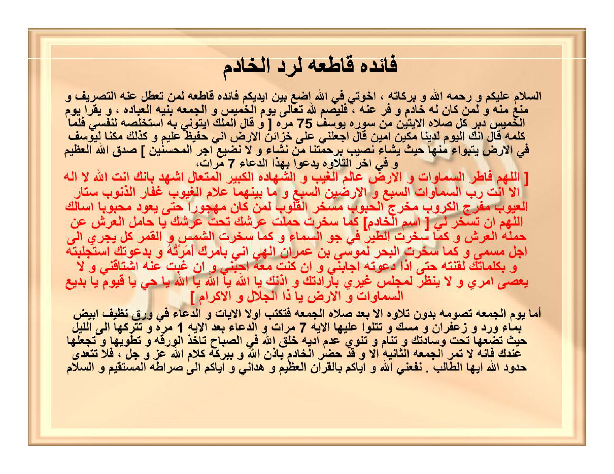
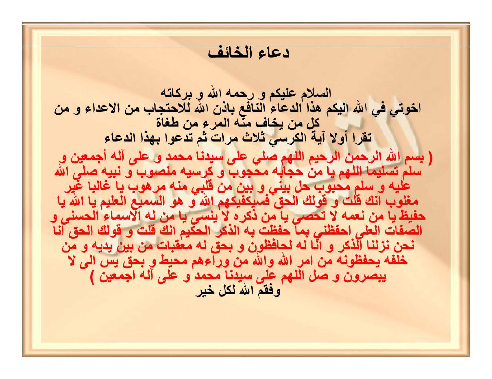

Preview Hal25 — lengkap arab / latin / Terjemahan / Syarah / Khususiyah — klik tab header tanpa scroll.
HALAMAN 25 — FĀIDAH QĀTHI'AH LI-RADDIL-KHĀDIM — فَائِدَةٌ قَاطِعَةٌ لِرَدِّ الْخَادِمِ
arab
فَائِدَةٌ قَاطِعَةٌ لِرَدِّ الْخَادِمِ
اَلسَّلَامُ عَلَيْكُمْ وَرَحْمَةُ اللهِ وَبَرَكَاتُهُ، إِخْوَتِي فِي اللهِ أَضَعُ بَيْنَ أَيْدِيكُمْ فَائِدَةً قَاطِعَةً لِمَنْ تَعَطَّلَ عَنْهُ التَّصْرِيفُ وَمُنِعَ مِنْهُ وَلِمَنْ كَانَ لَهُ خَادِمٌ وَفَرَّ عَنْهُ، فَلْيَصُمْ لِلّٰهِ تَعَالَى يَوْمَ الْخَمِيسِ وَالْجُمُعَةِ بِنِيَّةِ الْعِبَادَةِ، وَيَقْرَأُ يَوْمَ الْخَمِيسِ دُبُرَ كُلِّ صَلَاةٍ الْآيَتَيْنِ مِنْ سُورَةِ يُوسُفَ ٧٥ مَرَّةً
[وَقَالَ الْمَلِكُ ائْتُونِي بِهِ أَسْتَخْلِصْهُ لِنَفْسِي فَلَمَّا كَلَّمَهُ قَالَ إِنَّكَ الْيَوْمَ لَدَيْنَا مَكِينٌ أَمِينٌ قَالَ اجْعَلْنِي عَلَى خَزَائِنِ الْأَرْضِ إِنِّي حَفِيظٌ عَلِيمٌ وَكَذَلِكَ مَكَّنَّا لِيُوسُفَ فِي الْأَرْضِ يَتَبَوَّأُ مِنْهَا حَيْثُ يَشَاءُ نُصِيبُ بِرَحْمَتِنَا مَنْ نَشَاءُ وَلَا نُضِيعُ أَجْرَ الْمُحْسِنِينَ] صَدَقَ اللهُ الْعَظِيمُ
وَفِي آخِرِ التِّلَاوَةِ يَدْعُو بِهَذَا الدُّعَاءِ ٧ مَرَّاتٍ
[اللَّهُمَّ فَاطِرَ السَّمَاوَاتِ وَالْأَرْضِ عَالِمَ الْغَيْبِ وَالشَّهَادَةِ الْكَبِيرَ الْمُتَعَالَ أَشْهَدُ بِأَنَّكَ أَنْتَ اللهُ لَا إِلَهَ إِلَّا أَنْتَ رَبُّ السَّمَاوَاتِ السَّبْعِ وَالْأَرَضِينَ السَّبْعِ وَمَا بَيْنَهُمَا عَلَّامُ الْغُيُوبِ غَفَّارُ الذُّنُوبِ سَتَّارُ الْعُيُوبِ مُفَرِّجُ الْكُرُوبِ مُخْرِجُ الْحُبُوبِ مُسَخِّرُ الْقُلُوبِ لِمَنْ كَانَ مَهْجُورًا حَتَّى يَعُودَ مَحْبُوبًا أَسْأَلُكَ اللَّهُمَّ أَنْ تُسَخِّرَ لِي [اسْمَ الْخَادِمِ] كَمَا سَخَّرْتَ حَمَلَةَ عَرْشِكَ تَحْتَ عَرْشِكَ يَا حَامِلَ الْعَرْشِ عَنْ حَمَلَةِ الْعَرْشِ وَكَمَا سَخَّرْتَ الطَّيْرَ فِي جَوِّ السَّمَاءِ وَكَمَا سَخَّرْتَ الشَّمْسَ وَالْقَمَرَ كُلٌّ يَجْرِي إِلَى أَجَلٍ مُسَمًّى وَكَمَا سَخَّرْتَ الْبَحْرَ لِمُوسَى بْنِ عِمْرَانَ إِلَهِي أَنِّي بِأَمْرِكَ أَمَرْتُهُ وَبِدَعْوَتِكَ اسْتَجْلَبْتُهُ وَبِكَلِمَاتِكَ لَقَّنْتُهُ حَتَّى إِذَا دَعَوْتُهُ أَجَابَنِي وَإِنْ كُنْتُ مَعَهُ أَحَبَّنِي وَإِنْ غِبْتُ عَنْهُ اشْتَاقَنِي وَلَا يَعْصِي أَمْرِي وَلَا يَنْظُرُ لِمَجْلِسٍ غَيْرِي بِإِرَادَتِكَ وَإِذْنِكَ يَا اللهُ يَا اللهُ يَا اللهُ يَا حَيُّ يَا قَيُّومُ يَا بَدِيعَ السَّمَاوَاتِ وَالْأَرْضِ يَا ذَا الْجَلَالِ وَالْإِكْرَامِ]
أَمَّا يَوْمُ الْجُمُعَةِ تَصُومُهُ بِدُونِ تِلَاوَةٍ إِلَّا بَعْدَ صَلَاةِ الْجُمُعَةِ فَتَكْتُبُ أَوَّلًا الْآيَاتِ وَالدُّعَاءَ فِي وَرَقٍ نَظِيفٍ أَبْيَضَ بِمَاءِ وَرْدٍ وَزَعْفَرَانٍ وَمِسْكٍ، وَتَتْلُو عَلَيْهَا الْآيَةَ ٧ مَرَّاتٍ وَالدُّعَاءَ بَعْدَ الْآيَةِ ١ مَرَّةً، وَتَتْرُكُهَا إِلَى اللَّيْلِ حَيْثُ تَضَعُهَا تَحْتَ وِسَادَتِكَ وَتَنَامُ وَتَنْوِي عَدَمَ أَذِيَّةِ خَلْقِ اللهِ، فِي الصَّبَاحِ تَأْخُذُ الْوَرَقَةَ وَتَطْوِيهَا وَتَجْعَلُهَا عِنْدَكَ فَإِنَّهُ لَا تَمُرُّ الْجُمُعَةُ الثَّانِيَةُ إِلَّا وَقَدْ حَضَرَ الْخَادِمُ بِإِذْنِ اللهِ وَبِبَرَكَةِ كَلَامِ اللهِ عَزَّ وَجَلَّ، فَلَا تَتَعَدَّى حُدُودَ اللهِ أَيُّهَا الطَّالِبُ، نَفَعَنِي اللهُ وَإِيَّاكُمْ بِالْقُرْآنِ الْعَظِيمِ وَهَدَانِي وَإِيَّاكُمْ إِلَى صِرَاطِهِ الْمُسْتَقِيمِ وَالسَّلَامُ
latin
Fāidatun qāthi'atun li-raddil-khādim.
As-salāmu 'alaikum wa rahmatullāhi wa barakātuh, ikhwatī fillāhi adha'u baina aidīkum fāidatan qāthi'atan li-man ta'aththala 'anhut-tashrīfu wa muni'a minhu wa li-man kāna lahū khādimun wa farra 'anhu, fa-l yashum lillāhi ta'ālā yaumal-khamīsi wal-jumu'ati bi-niyyatil-'ibādati, wa yaqra'u yaumal-khamīsi dubura kulli shalātin al-āyataini min sūrati Yūsufa 75 marratan:
[Wa qālal-maliku'tūnī bihi astakhlishu linafsī fa-lammā kallamahū qāla innakal-yauma ladainā makīnun amīnun Qāla ij'alnī 'alā khazā'inil-ardhi innī hafīzhun 'alīmun Wa kadzālika makkannā li-Yūsufa fil-ardhi yatabawwa'u minhā haitsu yasyā'u nushību bi-rahmatinā man nasyā'u wa lā nudhī'u ajral-muhsinīna] shadaqallāhul-'azhīm.
Wa fī ākhir at-tilāwati yad'ū bihādzad-du'ā'i 7 marrātin:
[Allāhumma fāthiras-samāwāti wal-ardhi, 'ālimal-ghaibi wasy-syahādati, al-kabīral-muta'āli, asyhadu bi-annaka antallāhu lā ilāha illā anta, rabbas-samāwātis-sab'i wal-aradhīnas-sab'i wa mā bainahumā, 'allāmal-ghuyūbi, ghaffāradz-dzunūbi, sattāral-'uyūbi, mufarrijal-kurūbi, mukhrijal-hubūbi, musakhkhiral-qulūbi li-man kāna mahjūran hattā ya'ūda mahbūban, as'alukallāhumma an tusakhkhira lī [ismal-khādimi] kamā sakhkharta hamalata 'arsyika tahta 'arsyika yā hāmilal-'arsyi 'an hamalatil-'arsyi, wa kamā sakhkharta ath-thaira fī jawwis-samā'i, wa kamā sakhkharta asy-syamsa wal-qamara kullun yajrī ilā ajalim-musamman, wa kamā sakhkharta al-bahra li-Mūsā bni 'Imrāna, ilāhī annī bi-amrika amartuhu wa bi-da'watika istajlabtuhu wa bi-kalimātika laqqantuhu hattā idzā da'awtuhu ajābanī wa in kuntu ma'ahu ahabbanī wa in ghibtu 'anhu isytāqanī wa lā ya'shī amrī wa lā yanzhuru li-majlisi ghairī bi-irādatika wa idznika yā Allāhu yā Allāhu yā Allāhu, yā Hayyu yā Qayyūmu, yā Badī'as-samāwāti wal-ardhi, yā Dzal-jalāli wal-ikrām].
Ammā yaumal-jumu'ati tashūmuhu bidūni tilāwatin illā ba'da shalātil-jumu'ati fa-taktubu awwalan al-āyāti wad-du'ā'a fī waraqin nazhīfin abyadha bi-mā'i wardin wa za'farānin wa miskin, wa tatlū 'alaihal-āyata 7 marrātin wad-du'ā'a ba'dal-āyati 1 marratan, wa tatrukuhā ilal-laili haitsu tadha'uhā tahta wisādatika wa tanāmu wa tanwī 'adama adziyyati khalqillāhi, fish-shabāhi ta'khudhul-waraqata wa tathwīhā wa taj'aluhā 'indaka fa-innahū lā tamurrul-jumu'atuts-tsāniyatu illā wa qad hadharal-khādimu bi-idznillāhi wa bi-barakati kalāmillāhi 'azza wa jalla, fa-lā tata'addā hudūdallāhi ayyuhath-thālib, nafa'aniyallāhu wa iyyākum bil-qur'ānil-'azhīmi wa hadānī wa iyyākum ilā shirāthihil-mustaqīmi was-salām.
As-salāmu 'alaikum wa rahmatullāhi wa barakātuh, ikhwatī fillāhi adha'u baina aidīkum fāidatan qāthi'atan li-man ta'aththala 'anhut-tashrīfu wa muni'a minhu wa li-man kāna lahū khādimun wa farra 'anhu, fa-l yashum lillāhi ta'ālā yaumal-khamīsi wal-jumu'ati bi-niyyatil-'ibādati, wa yaqra'u yaumal-khamīsi dubura kulli shalātin al-āyataini min sūrati Yūsufa 75 marratan:
[Wa qālal-maliku'tūnī bihi astakhlishu linafsī fa-lammā kallamahū qāla innakal-yauma ladainā makīnun amīnun Qāla ij'alnī 'alā khazā'inil-ardhi innī hafīzhun 'alīmun Wa kadzālika makkannā li-Yūsufa fil-ardhi yatabawwa'u minhā haitsu yasyā'u nushību bi-rahmatinā man nasyā'u wa lā nudhī'u ajral-muhsinīna] shadaqallāhul-'azhīm.
Wa fī ākhir at-tilāwati yad'ū bihādzad-du'ā'i 7 marrātin:
[Allāhumma fāthiras-samāwāti wal-ardhi, 'ālimal-ghaibi wasy-syahādati, al-kabīral-muta'āli, asyhadu bi-annaka antallāhu lā ilāha illā anta, rabbas-samāwātis-sab'i wal-aradhīnas-sab'i wa mā bainahumā, 'allāmal-ghuyūbi, ghaffāradz-dzunūbi, sattāral-'uyūbi, mufarrijal-kurūbi, mukhrijal-hubūbi, musakhkhiral-qulūbi li-man kāna mahjūran hattā ya'ūda mahbūban, as'alukallāhumma an tusakhkhira lī [ismal-khādimi] kamā sakhkharta hamalata 'arsyika tahta 'arsyika yā hāmilal-'arsyi 'an hamalatil-'arsyi, wa kamā sakhkharta ath-thaira fī jawwis-samā'i, wa kamā sakhkharta asy-syamsa wal-qamara kullun yajrī ilā ajalim-musamman, wa kamā sakhkharta al-bahra li-Mūsā bni 'Imrāna, ilāhī annī bi-amrika amartuhu wa bi-da'watika istajlabtuhu wa bi-kalimātika laqqantuhu hattā idzā da'awtuhu ajābanī wa in kuntu ma'ahu ahabbanī wa in ghibtu 'anhu isytāqanī wa lā ya'shī amrī wa lā yanzhuru li-majlisi ghairī bi-irādatika wa idznika yā Allāhu yā Allāhu yā Allāhu, yā Hayyu yā Qayyūmu, yā Badī'as-samāwāti wal-ardhi, yā Dzal-jalāli wal-ikrām].
Ammā yaumal-jumu'ati tashūmuhu bidūni tilāwatin illā ba'da shalātil-jumu'ati fa-taktubu awwalan al-āyāti wad-du'ā'a fī waraqin nazhīfin abyadha bi-mā'i wardin wa za'farānin wa miskin, wa tatlū 'alaihal-āyata 7 marrātin wad-du'ā'a ba'dal-āyati 1 marratan, wa tatrukuhā ilal-laili haitsu tadha'uhā tahta wisādatika wa tanāmu wa tanwī 'adama adziyyati khalqillāhi, fish-shabāhi ta'khudhul-waraqata wa tathwīhā wa taj'aluhā 'indaka fa-innahū lā tamurrul-jumu'atuts-tsāniyatu illā wa qad hadharal-khādimu bi-idznillāhi wa bi-barakati kalāmillāhi 'azza wa jalla, fa-lā tata'addā hudūdallāhi ayyuhath-thālib, nafa'aniyallāhu wa iyyākum bil-qur'ānil-'azhīmi wa hadānī wa iyyākum ilā shirāthihil-mustaqīmi was-salām.
Terjemahan
Faedah yang pasti untuk mengembalikan khadam.
Assalamu'alaikum warahmatullahi wabarakatuh, wahai saudara-saudaraku karena Allah, aku letakkan di antara tangan kalian faedah yang pasti bagi orang yang terhalang tashrifnya dan terhalang darinya serta bagi orang yang memiliki khadam lalu khadam itu pergi darinya. Maka hendaklah ia berpuasa karena Allah ta'ala pada hari Kamis dan Jumat dengan niat ibadah. Pada hari Kamis ia membaca setiap selesai salat dua ayat dari Surah Yusuf sebanyak 75 kali:
[Dan raja berkata: Datangkanlah dia kepadaku agar aku memilihnya untuk diriku sendiri; maka tatkala ia telah bercakap-cakap dengannya, raja berkata: Sesungguhnya kamu pada hari ini di sisi kami berkedudukan tinggi lagi terpercaya. Dia (Yusuf) berkata: Jadikanlah aku bendahara negeri; sesungguhnya aku adalah orang yang pandai menjaga lagi berpengetahuan. Dan demikianlah Kami memberi kedudukan kepada Yusuf di negeri itu; ia bebas bertempat tinggal di mana saja yang ia kehendaki; Kami melimpahkan rahmat Kami kepada siapa yang Kami kehendaki dan Kami tidak menyia-nyiakan pahala orang-orang yang berbuat baik] Maha benar Allah yang Maha Agung.
Dan di akhir bacaan hendaklah ia berdoa dengan doa ini sebanyak 7 kali:
[Ya Allah, Pencipta langit dan bumi, Yang Mengetahui yang gaib dan yang nyata, Yang Maha Besar lagi Maha Tinggi, aku bersaksi bahwa Engkaulah Allah, tidak ada tuhan selain Engkau, Tuhan langit yang tujuh dan bumi yang tujuh serta apa yang ada di antara keduanya, Yang Maha Mengetahui hal-hal gaib, Pengampun dosa-dosa, Penutup aib-aib, Penghilang kesusahan, Penumbuh biji-bijian, Penakluk hati bagi orang yang dijauhi hingga ia kembali dicintai, aku memohon kepada-Mu ya Allah agar Engkau tundukkan untukku [nama khadam] sebagaimana Engkau telah menundukkan para pemikul Arasy-Mu di bawah Arasy-Mu, wahai yang memikul Arasy dari para pemikul Arasy, dan sebagaimana Engkau menundukkan burung di udara langit, dan sebagaimana Engkau menundukkan matahari dan bulan — semuanya beredar hingga waktu yang ditentukan — dan sebagaimana Engkau menundukkan laut untuk Musa bin Imran; Tuhanku, sesungguhnya dengan perintah-Mu aku telah memerintahkannya, dengan seruan-Mu aku telah memanggilnya, dan dengan kalimat-kalimat-Mu aku telah mengajarinya, sehingga apabila aku memanggilnya ia menjawabku, dan jika aku bersamanya ia mencintaiku, dan jika aku jauh darinya ia merindukanku, ia tidak durhaka terhadap perintahku dan tidak memperhatikan majelis selainku, dengan kehendak-Mu dan izin-Mu, wahai Allah, wahai Allah, wahai Allah, wahai Yang Maha Hidup, wahai Yang Maha Berdiri Sendiri, wahai Pencipta langit dan bumi, wahai Pemilik keagungan dan kemuliaan].
Adapun pada hari Jumat, berpuasalah tanpa bacaan kecuali setelah salat Jumat, lalu tulislah terlebih dahulu ayat-ayat dan doa tersebut pada kertas putih bersih dengan air mawar, za'faran dan misk; bacalah di atasnya ayat tersebut 7 kali dan doa setelah ayat 1 kali, lalu tinggalkanlah hingga malam di mana engkau meletakkannya di bawah bantalmu dan engkau tidur dengan niat tidak menyakiti makhluk Allah. Pada pagi harinya ambillah kertas tersebut, lipatlah dan jadikanlah di sisimu; maka tidak akan lewat Jumat kedua kecuali khadam tersebut telah hadir dengan izin Allah dan dengan keberkahan kalam Allah 'azza wa jalla. Maka janganlah engkau melampaui batas-batas Allah, wahai penuntut ilmu. Semoga Allah memberi manfaat kepadaku dan kepada kalian dengan Al-Qur'an yang agung, memberi petunjuk kepadaku dan kepada kalian kepada jalan-Nya yang lurus, dan salam sejahtera.
Assalamu'alaikum warahmatullahi wabarakatuh, wahai saudara-saudaraku karena Allah, aku letakkan di antara tangan kalian faedah yang pasti bagi orang yang terhalang tashrifnya dan terhalang darinya serta bagi orang yang memiliki khadam lalu khadam itu pergi darinya. Maka hendaklah ia berpuasa karena Allah ta'ala pada hari Kamis dan Jumat dengan niat ibadah. Pada hari Kamis ia membaca setiap selesai salat dua ayat dari Surah Yusuf sebanyak 75 kali:
[Dan raja berkata: Datangkanlah dia kepadaku agar aku memilihnya untuk diriku sendiri; maka tatkala ia telah bercakap-cakap dengannya, raja berkata: Sesungguhnya kamu pada hari ini di sisi kami berkedudukan tinggi lagi terpercaya. Dia (Yusuf) berkata: Jadikanlah aku bendahara negeri; sesungguhnya aku adalah orang yang pandai menjaga lagi berpengetahuan. Dan demikianlah Kami memberi kedudukan kepada Yusuf di negeri itu; ia bebas bertempat tinggal di mana saja yang ia kehendaki; Kami melimpahkan rahmat Kami kepada siapa yang Kami kehendaki dan Kami tidak menyia-nyiakan pahala orang-orang yang berbuat baik] Maha benar Allah yang Maha Agung.
Dan di akhir bacaan hendaklah ia berdoa dengan doa ini sebanyak 7 kali:
[Ya Allah, Pencipta langit dan bumi, Yang Mengetahui yang gaib dan yang nyata, Yang Maha Besar lagi Maha Tinggi, aku bersaksi bahwa Engkaulah Allah, tidak ada tuhan selain Engkau, Tuhan langit yang tujuh dan bumi yang tujuh serta apa yang ada di antara keduanya, Yang Maha Mengetahui hal-hal gaib, Pengampun dosa-dosa, Penutup aib-aib, Penghilang kesusahan, Penumbuh biji-bijian, Penakluk hati bagi orang yang dijauhi hingga ia kembali dicintai, aku memohon kepada-Mu ya Allah agar Engkau tundukkan untukku [nama khadam] sebagaimana Engkau telah menundukkan para pemikul Arasy-Mu di bawah Arasy-Mu, wahai yang memikul Arasy dari para pemikul Arasy, dan sebagaimana Engkau menundukkan burung di udara langit, dan sebagaimana Engkau menundukkan matahari dan bulan — semuanya beredar hingga waktu yang ditentukan — dan sebagaimana Engkau menundukkan laut untuk Musa bin Imran; Tuhanku, sesungguhnya dengan perintah-Mu aku telah memerintahkannya, dengan seruan-Mu aku telah memanggilnya, dan dengan kalimat-kalimat-Mu aku telah mengajarinya, sehingga apabila aku memanggilnya ia menjawabku, dan jika aku bersamanya ia mencintaiku, dan jika aku jauh darinya ia merindukanku, ia tidak durhaka terhadap perintahku dan tidak memperhatikan majelis selainku, dengan kehendak-Mu dan izin-Mu, wahai Allah, wahai Allah, wahai Allah, wahai Yang Maha Hidup, wahai Yang Maha Berdiri Sendiri, wahai Pencipta langit dan bumi, wahai Pemilik keagungan dan kemuliaan].
Adapun pada hari Jumat, berpuasalah tanpa bacaan kecuali setelah salat Jumat, lalu tulislah terlebih dahulu ayat-ayat dan doa tersebut pada kertas putih bersih dengan air mawar, za'faran dan misk; bacalah di atasnya ayat tersebut 7 kali dan doa setelah ayat 1 kali, lalu tinggalkanlah hingga malam di mana engkau meletakkannya di bawah bantalmu dan engkau tidur dengan niat tidak menyakiti makhluk Allah. Pada pagi harinya ambillah kertas tersebut, lipatlah dan jadikanlah di sisimu; maka tidak akan lewat Jumat kedua kecuali khadam tersebut telah hadir dengan izin Allah dan dengan keberkahan kalam Allah 'azza wa jalla. Maka janganlah engkau melampaui batas-batas Allah, wahai penuntut ilmu. Semoga Allah memberi manfaat kepadaku dan kepada kalian dengan Al-Qur'an yang agung, memberi petunjuk kepadaku dan kepada kalian kepada jalan-Nya yang lurus, dan salam sejahtera.
Syarah dan Penjelasan
Konteks Masalah: Halaman ini memuat solusi spesifik dalam disiplin hikmah untuk mengatasi problem ketika seorang praktisi (as-sālik) mengalami pemutusan hubungan spiritual dengan khadam atau pendamping gaibnya akibat kesalahan prosedur, keteledoran, atau sanksi internal amalan.
Pendekatan Ritual: Menggabungkan ibadah mahdhah berupa puasa sunnah dua hari (Kamis–Jumat), pembacaan ayat khusus dari kisah Nabi Yusuf — simbol kemuliaan, penundukan pandangan, dan pengembalian posisi terhormat — serta doa tawasul tauhid yang kuat untuk memohon pemulihan ikatan batin amalan.
Pendekatan Ritual: Menggabungkan ibadah mahdhah berupa puasa sunnah dua hari (Kamis–Jumat), pembacaan ayat khusus dari kisah Nabi Yusuf — simbol kemuliaan, penundukan pandangan, dan pengembalian posisi terhormat — serta doa tawasul tauhid yang kuat untuk memohon pemulihan ikatan batin amalan.
Khususiyah dan Tatacara Praktik
Fungsi Utama: Digunakan secara khusus sebagai metode darurat untuk memanggil kembali (raddul-khādim) kekuatan, energi, atau entitas pengawal amalan yang kabur atau terputus koneksinya.
Peringatan Ketat: Diingatkan oleh penyusun kitab agar pengamal senantiasa bertakwa, menjaga batasan syariat, dan tidak menyalahgunakan amalan ini untuk kezaliman.
Peringatan Ketat: Diingatkan oleh penyusun kitab agar pengamal senantiasa bertakwa, menjaga batasan syariat, dan tidak menyalahgunakan amalan ini untuk kezaliman.

[Gambar: HALAMAN 25 — FĀIDAH QĀTHI'AH LI-RADDIL-KHĀDIM — فَائِدَةٌ قَاطِعَةٌ لِرَدِّ الْخَادِمِ]
Preview Hal26 — lengkap dengan Syarah benteng Ihtijāb & 5 pilar ayat.
HALAMAN 26 — DU'Ā'UL-KHĀ'IF — دُعَاءُ الْخَائِفِ
arab
دُعَاءُ الْخَائِفِ
اَلسَّلَامُ عَلَيْكُمْ وَرَحْمَةُ اللهِ وَبَرَكَاتُهُ
إِخْوَتِي فِي اللهِ، إِلَيْكُمْ هَذَا الدُّعَاءَ النَّافِعَ بِإِذْنِ اللهِ لِلِاحْتِجَابِ مِنَ الْأَعْدَاءِ وَمِنْ كُلِّ مَنْ يَخَافُ مِنْهُ الْمَرْءُ مِنْ طُغَاةٍ
تَقْرَأُ أَوَّلًا آيَةَ الْكُرْسِيِّ ثَلَاثَ مَرَّاتٍ، ثُمَّ تَدْعُو بِهَذَا الدُّعَاءِ
[بِسْمِ اللهِ الرَّحْمٰنِ الرَّحِيمِ، اللَّهُمَّ صَلِّ عَلَى سَيِّدِنَا مُحَمَّدٍ وَعَلَى آلِهِ أَجْمَعِينَ وَسَلِّمْ تَسْلِيمًا، اللَّهُمَّ يَا مَنْ حِجَابُهُ مَحْجُوبٌ وَكُرْسِيُّهُ مَنْصُوبٌ وَنَبِيُّهُ صَلَّى اللهُ عَلَيْهِ وَسَلَّمَ مَحْبُوبٌ، حُلْ بَيْنِي وَبَيْنَ مَنْ قَلْبِي مِنْهُ مَرْهُوبٌ يَا غَالِبًا غَيْرَ مَغْلُوبٍ إِنَّكَ قُلْتَ وَقَوْلُكَ الْحَقُّ ﴿فَسَيَكْفِيكَهُمُ اللهُ وَهُوَ السَّمِيعُ الْعَلِيمُ﴾ يَا اللهُ يَا حَفِيظُ يَا مَنْ نِعَمُهُ لَا تُحْصَى يَا مَنْ ذِكْرُهُ لَا يُنْسَى يَا مَنْ لَهُ الْأَسْمَاءُ الْحُسْنَى وَالصِّفَاتُ الْعُلَى احْفَظْنِي بِمَا حَفِظْتَ بِهِ الذِّكْرَ الْحَكِيمَ إِنَّكَ قُلْتَ وَقَوْلُكَ الْحَقُّ ﴿إِنَّا نَحْنُ نَزَّلْنَا الذِّكْرَ وَإِنَّا لَهُ لَحَافِظُونَ﴾ وَبِحَقِّ ﴿لَهُ مُعَقِّبَاتٌ مِنْ بَيْنِ يَدَيْهِ وَمِنْ خَلْفِهِ يَحْفَظُونَهُ مِنْ أَمْرِ اللهِ﴾ ﴿وَاللهُ مِنْ وَرَائِهِمْ مُحِيطٌ﴾ وَبِحَقِّ ﴿يس﴾ إِلَى ﴿فَهُمْ لَا يُبْصِرُونَ﴾، وَصَلِّ اللَّهُمَّ عَلَى سَيِّدِنَا مُحَمَّدٍ وَعَلَى آلِهِ أَجْمَعِينَ]
وَفَّقَكُمُ اللهُ لِكُلِّ خَيْرٍ
latin
Du'ā'ul-khā'ifi.
As-salāmu 'alaikum wa rahmatullāhi wa barakātuh.
Ikhwatī fillāhi, ilaikum hādzad-du'ā'an-nāfi'a bi-idznillāhi lil-ihtijābi minal-a'dā'i wa min kulli man yakhāfu minhul-mar'u min thughātin.
Taqra'u awwalan āyatil-kursiyyi tsalātsa marrātin, tsumma tad'ū bihādzad-du'ā'i:
[Bismillāhir-rahmānir-rahīmi, Allāhumma shalli 'alā sayyidinā Muhammadin wa 'alā ālihi ajma'īna wa sallim taslīman, Allāhumma yā man hijābuhū mahjūbun wa kursiyyuhū manshūbun wa nabiyyuhū shallallāhu 'alaihi wa sallama mahbūbun, hul bainī wa baina man qalbī minhu marhūbun, yā ghāliban ghaira maghlūbin, innaka qulta wa qaulukal-haqqu: [Fa-sayakfīkahumullāhu wa Huwas-samī'ul-'alīmu] (QS. al-Baqarah: 137), yā Allāhu yā Hafīzhu, yā man ni'amuhū lā tuhshā, yā man dzikruhū lā yunsā, yā man lahul-asmā'ul-husnā wash-shifātul-'ulā, ihfazhnī bimā hafizhta bihidz-dzikral-hakīmi, innaka qulta wa qaulukal-haqqu: [Innā nahnu nazzalnādz-dzikra wa innā lahū lahāfizhūna] (QS. al-Hijr: 9), wa bi-haqqi: [Lahū mu'aqqibātun min baini yadaihi wa min khalfihi yahfazhūnahū min amrillāhi] (QS. ar-Ra'd: 11), [Wallāhu min warā'ihim muhīthun] (QS. al-Burūj: 20), wa bi-haqqi [Yā-Sīn ilā fahum lā yubshirūna] (QS. Yā-Sīn: 1-9). Wa shallillāhumma 'alā sayyidinā Muhammadin wa 'alā ālihi ajma'īna].
Waffaqakumullāhu li-kulli khairin.
As-salāmu 'alaikum wa rahmatullāhi wa barakātuh.
Ikhwatī fillāhi, ilaikum hādzad-du'ā'an-nāfi'a bi-idznillāhi lil-ihtijābi minal-a'dā'i wa min kulli man yakhāfu minhul-mar'u min thughātin.
Taqra'u awwalan āyatil-kursiyyi tsalātsa marrātin, tsumma tad'ū bihādzad-du'ā'i:
[Bismillāhir-rahmānir-rahīmi, Allāhumma shalli 'alā sayyidinā Muhammadin wa 'alā ālihi ajma'īna wa sallim taslīman, Allāhumma yā man hijābuhū mahjūbun wa kursiyyuhū manshūbun wa nabiyyuhū shallallāhu 'alaihi wa sallama mahbūbun, hul bainī wa baina man qalbī minhu marhūbun, yā ghāliban ghaira maghlūbin, innaka qulta wa qaulukal-haqqu: [Fa-sayakfīkahumullāhu wa Huwas-samī'ul-'alīmu] (QS. al-Baqarah: 137), yā Allāhu yā Hafīzhu, yā man ni'amuhū lā tuhshā, yā man dzikruhū lā yunsā, yā man lahul-asmā'ul-husnā wash-shifātul-'ulā, ihfazhnī bimā hafizhta bihidz-dzikral-hakīmi, innaka qulta wa qaulukal-haqqu: [Innā nahnu nazzalnādz-dzikra wa innā lahū lahāfizhūna] (QS. al-Hijr: 9), wa bi-haqqi: [Lahū mu'aqqibātun min baini yadaihi wa min khalfihi yahfazhūnahū min amrillāhi] (QS. ar-Ra'd: 11), [Wallāhu min warā'ihim muhīthun] (QS. al-Burūj: 20), wa bi-haqqi [Yā-Sīn ilā fahum lā yubshirūna] (QS. Yā-Sīn: 1-9). Wa shallillāhumma 'alā sayyidinā Muhammadin wa 'alā ālihi ajma'īna].
Waffaqakumullāhu li-kulli khairin.
Terjemahan
Doa orang yang takut.
Assalamu'alaikum warahmatullahi wabarakatuh.
Wahai saudara-saudaraku karena Allah, aku sampaikan kepada kalian doa yang bermanfaat ini — dengan izin Allah — untuk berlindung dari musuh-musuh dan dari setiap penguasa zalim yang ditakuti seseorang.
Bacalah terlebih dahulu Ayat Kursi sebanyak tiga kali, kemudian berdoalah dengan doa ini:
[Dengan menyebut nama Allah Yang Maha Pengasih lagi Maha Penyayang, ya Allah limpahkanlah shalawat kepada junjungan kami Nabi Muhammad dan kepada keluarganya semuanya serta berilah keselamatan dengan sebenar-benar keselamatan; ya Allah, wahai Zat yang hijab-Nya terjaga, Kursi-Nya terpancang dan Nabi-Nya — semoga Allah bershalawat kepadanya dan memberi keselamatan — adalah kekasih yang dicintai, halangilah antara aku dan orang yang hatiku merasa takut kepadanya, wahai Yang Maha Menang yang tidak terkalahkan, sesungguhnya Engkau telah berfirman dan firman-Mu adalah benar: {Maka Allah akan mencukupimu terhadap mereka dan Dialah Yang Maha Mendengar lagi Maha Mengetahui}; wahai Allah, wahai Yang Maha Memelihara, wahai Zat yang nikmat-nikmat-Nya tidak terhitung, wahai Zat yang mengingat-Nya tidak terlupakan, wahai Zat yang memiliki nama-nama yang paling baik dan sifat-sifat yang Maha Tinggi, jagalah aku sebagaimana Engkau menjaga Adz-Dzikir yang bijaksana; sesungguhnya Engkau telah berfirman dan firman-Mu benar: {Sesungguhnya Kamilah yang menurunkan Adz-Dzikir dan sesungguhnya Kamilah yang benar-benar memeliharanya}; dan demi hak {Baginya ada malaikat-malaikat pengiring dari depan dan belakangnya yang menjaganya atas perintah Allah} dan {Allah meliputi mereka dari belakang} serta demi hak Yasin hingga {maka mereka tidak dapat melihat}; dan limpahkanlah shalawat ya Allah kepada junjungan kami Nabi Muhammad dan kepada keluarganya semuanya].
Semoga Allah memberi taufik kepada kalian untuk segala kebaikan.
Assalamu'alaikum warahmatullahi wabarakatuh.
Wahai saudara-saudaraku karena Allah, aku sampaikan kepada kalian doa yang bermanfaat ini — dengan izin Allah — untuk berlindung dari musuh-musuh dan dari setiap penguasa zalim yang ditakuti seseorang.
Bacalah terlebih dahulu Ayat Kursi sebanyak tiga kali, kemudian berdoalah dengan doa ini:
[Dengan menyebut nama Allah Yang Maha Pengasih lagi Maha Penyayang, ya Allah limpahkanlah shalawat kepada junjungan kami Nabi Muhammad dan kepada keluarganya semuanya serta berilah keselamatan dengan sebenar-benar keselamatan; ya Allah, wahai Zat yang hijab-Nya terjaga, Kursi-Nya terpancang dan Nabi-Nya — semoga Allah bershalawat kepadanya dan memberi keselamatan — adalah kekasih yang dicintai, halangilah antara aku dan orang yang hatiku merasa takut kepadanya, wahai Yang Maha Menang yang tidak terkalahkan, sesungguhnya Engkau telah berfirman dan firman-Mu adalah benar: {Maka Allah akan mencukupimu terhadap mereka dan Dialah Yang Maha Mendengar lagi Maha Mengetahui}; wahai Allah, wahai Yang Maha Memelihara, wahai Zat yang nikmat-nikmat-Nya tidak terhitung, wahai Zat yang mengingat-Nya tidak terlupakan, wahai Zat yang memiliki nama-nama yang paling baik dan sifat-sifat yang Maha Tinggi, jagalah aku sebagaimana Engkau menjaga Adz-Dzikir yang bijaksana; sesungguhnya Engkau telah berfirman dan firman-Mu benar: {Sesungguhnya Kamilah yang menurunkan Adz-Dzikir dan sesungguhnya Kamilah yang benar-benar memeliharanya}; dan demi hak {Baginya ada malaikat-malaikat pengiring dari depan dan belakangnya yang menjaganya atas perintah Allah} dan {Allah meliputi mereka dari belakang} serta demi hak Yasin hingga {maka mereka tidak dapat melihat}; dan limpahkanlah shalawat ya Allah kepada junjungan kami Nabi Muhammad dan kepada keluarganya semuanya].
Semoga Allah memberi taufik kepada kalian untuk segala kebaikan.
Syarah dan Penjelasan
Konstruksi Benteng Tak Terlihat (Ihtijāb): Amalan ini berfungsi membentuk perisai aura tak kasat mata di sekeliling praktisi. Ketika berhadapan dengan musuh, orang jahat, atau penguasa yang hendak berbuat zalim, musuh tidak akan memiliki daya untuk mencelakai atau bahkan pandangan mereka dikunci oleh Allah.
Kombinasi Ayat-Ayat Penjaga (Āyātul-Hifzh): Doa ini merajut lima pilar ayat perlindungan utama Al-Qur'an: (1) Ayat Kursi (3×) sebagai pondasi benteng tauhid; (2) QS. al-Baqarah: 137 (Fa-sayakfīkahumullāhu) — janji pengawalan langsung dari Allah; (3) QS. al-Hijr: 9 (Innā Nahnu Nazzalnādz-Dzikra) — memindahkan jaminan pemeliharaan Al-Qur'an ke keselamatan fisik dan jiwa pengamal; (4) QS. ar-Ra'd: 11 (Mu'aqqibāt) — mengaktifkan pengawalan Malaikat Mu'aqqibat di depan dan belakang tubuh; (5) QS. Yā-Sīn: 1–9 (Wa Ja'alnā min Baini Aidīhim) — mengunci mata musuh agar buta dari keberadaan pengamal.
Kombinasi Ayat-Ayat Penjaga (Āyātul-Hifzh): Doa ini merajut lima pilar ayat perlindungan utama Al-Qur'an: (1) Ayat Kursi (3×) sebagai pondasi benteng tauhid; (2) QS. al-Baqarah: 137 (Fa-sayakfīkahumullāhu) — janji pengawalan langsung dari Allah; (3) QS. al-Hijr: 9 (Innā Nahnu Nazzalnādz-Dzikra) — memindahkan jaminan pemeliharaan Al-Qur'an ke keselamatan fisik dan jiwa pengamal; (4) QS. ar-Ra'd: 11 (Mu'aqqibāt) — mengaktifkan pengawalan Malaikat Mu'aqqibat di depan dan belakang tubuh; (5) QS. Yā-Sīn: 1–9 (Wa Ja'alnā min Baini Aidīhim) — mengunci mata musuh agar buta dari keberadaan pengamal.
Khususiyah dan Tatacara Praktik
Kepraktisan Tanpa Sarat Berat: Tidak memerlukan tirakat puasa atau penulisan wafaq rumit; cukup dibaca saat merasa terancam atau hendak menemui orang zalim.
Keamanan Mutlak Perjalanan dan Darurat: Sangat ampuh dibaca saat berada di daerah rawan kejahatan, ancaman tindak kekerasan, intimidasi penguasa, maupun gangguan makhluk halus.
Keamanan Mutlak Perjalanan dan Darurat: Sangat ampuh dibaca saat berada di daerah rawan kejahatan, ancaman tindak kekerasan, intimidasi penguasa, maupun gangguan makhluk halus.

[Gambar: HALAMAN 26 — DU'Ā'UL-KHĀ'IF — دُعَاءُ الْخَائِفِ]
Indeks Preview Hal01-26 — 1 klik tanpa scroll
Klik kartu untuk buka preview — Hal terbaru Hal25-26 ada di paling bawah (badge BARU).
FINAL 5 LAPIS — Hal10/11 diperbaiki
PREVIEW_5_LAPIS_BERSIH.html
PREVIEW_5_LAPIS_BERSIH.html
arsip
Batch02 V2 Hal09-13 — Preview DOCX FINAL
PREVIEW_BATCH02_V2_HAL09-13.html
PREVIEW_BATCH02_V2_HAL09-13.html
arsip
Batch02 V2 LENGKAP Hal09-13 — 9 Ketentuan
PREVIEW_BATCH02_V2_LENGKAP.html
PREVIEW_BATCH02_V2_LENGKAP.html
arsip
HAL 01–08 Gabungan Latin Baru
PREVIEW_HAL01-08_GABUNGAN.html
PREVIEW_HAL01-08_GABUNGAN.html
arsip
HAL 01 SAMPUL
PREVIEW_HAL01_SAMPUL.html
PREVIEW_HAL01_SAMPUL.html
arsip
HAL 02 IHDA — arab latin Terjemahan
PREVIEW_HAL02_IHDA.html
PREVIEW_HAL02_IHDA.html
arsip
HAL 03 IJAZAH
PREVIEW_HAL03_IJAZAH.html
PREVIEW_HAL03_IJAZAH.html
arsip
HAL 04 FIHRIS
PREVIEW_HAL04_FIHRIS.html
PREVIEW_HAL04_FIHRIS.html
arsip
HALAMAN 04 — SAMPUL DALAM
PREVIEW_HAL04_SAMPUL_DALAM.html
PREVIEW_HAL04_SAMPUL_DALAM.html
arsip
HALAMAN 05 — FIHRIS
PREVIEW_HAL05_FIHRIS.html
PREVIEW_HAL05_FIHRIS.html
arsip
HAL 06 MAYSARAH — rajah ditulis ulang
PREVIEW_HAL06_MAYSARAH_1_3.html
PREVIEW_HAL06_MAYSARAH_1_3.html
arsip
HAL 07 MAYSARAH 2/3
PREVIEW_HAL07_MAYSARAH_2_3.html
PREVIEW_HAL07_MAYSARAH_2_3.html
arsip
HAL 08 WAFAQ SISIP Latin Baru
PREVIEW_HAL08_MAYSARAH_3_3.html
PREVIEW_HAL08_MAYSARAH_3_3.html
arsip
HAL 09 MUHRQAH
PREVIEW_HAL09_FAIDAH_MUHRQAH.html
PREVIEW_HAL09_FAIDAH_MUHRQAH.html
arsip
HAL 10 — Rajah Huruf Asli
PREVIEW_HAL10_FAIDAH_MUHRQAH_2.html
PREVIEW_HAL10_FAIDAH_MUHRQAH_2.html
arsip
HAL 11 — Bracket rapi
PREVIEW_HAL11_FAIDAH_QATHIAH_1.html
PREVIEW_HAL11_FAIDAH_QATHIAH_1.html
arsip
HAL 12 KOREKSI 3x3 — Arab RTL benar
PREVIEW_HAL12_FAIDAH_QATHIAH_WAFQ.html
PREVIEW_HAL12_FAIDAH_QATHIAH_WAFQ.html
arsip
HAL 13 — sinkron hal_13.png
PREVIEW_HAL13_ZAJR_QATHI_1_3.html
PREVIEW_HAL13_ZAJR_QATHI_1_3.html
arsip
HAL 14 — tanda kurung diperbaiki
PREVIEW_HAL14_ZAJR_QATHI_2_3.html
PREVIEW_HAL14_ZAJR_QATHI_2_3.html
arsip
HALAMAN 15 — FAIDAH THARD 'ATHLUSH 1/2 — فَائِدَةٌ لِطَرْدِ عَطْلُوشٍ
PREVIEW_HAL15_ATHLUSH_1_3.html
PREVIEW_HAL15_ATHLUSH_1_3.html
arsip
HALAMAN 16 — FAIDAH THARD 'ATHLUSH 2/2 — WAFAQ 3×3
PREVIEW_HAL16_ATHLUSH_2_3.html
PREVIEW_HAL16_ATHLUSH_2_3.html
arsip
HALAMAN 17 — AD-DURRAH AN-NŪRĀNIYYAH 1/2 — الدُّرَّةُ النُّورَانِيَّةُ
PREVIEW_HAL17_DURRAH_1_2.html
PREVIEW_HAL17_DURRAH_1_2.html
arsip
HALAMAN 18 — WAFAQ MURABBA‘ JALĀLAH 4×4 — وَفْقُ الْجَلَالَةِ
PREVIEW_HAL18_WAFAQ_4X4_2_2.html
PREVIEW_HAL18_WAFAQ_4X4_2_2.html
arsip
HALAMAN 19 — FĀIDAH FĪ TADMĪRIZH ZHĀLIM — فَائِدَةٌ فِي تَدْمِيرِ الظَّالِمِ
PREVIEW_HAL19_TADMIR_1_2.html
PREVIEW_HAL19_TADMIR_1_2.html
BARU
HALAMAN 20 — AL-WAFQU AL-MUTSALLATS 3×3 — الْوَفْقُ الْمُثَلَّثُ
PREVIEW_HAL20_WAFAQ_3X3.html
PREVIEW_HAL20_WAFAQ_3X3.html
BARU
HALAMAN 21 — FĀIDAH MUJARRABAH LI-QAHRIL-QARĪN — فَائِدَةٌ مُجَرَّبَةٌ لِقَهْرِ الْقَرِينِ
PREVIEW_HAL21_QAHR_QARIN_1_1.html
PREVIEW_HAL21_QAHR_QARIN_1_1.html
BARU
HALAMAN 22-24 — AS-SAIFUL-BATTĀR LI-DAF'I MAIMŪNIL-GHADDĀR — السَّيْفُ الْبَتَّارُ لِدَفْعِ مَيْمُونٍ الْغَدَّارِ
PREVIEW_HAL22_SAIF_BATTAR_1_3.html
PREVIEW_HAL22_SAIF_BATTAR_1_3.html
BARU
HALAMAN 25 — FĀIDAH QĀTHI'AH LI-RADDIL-KHĀDIM — فَائِدَةٌ قَاطِعَةٌ لِرَدِّ الْخَادِمِ
PREVIEW_HAL25_QATHIAH_RADD_KHADIM_1_1.html
PREVIEW_HAL25_QATHIAH_RADD_KHADIM_1_1.html
BARU
HALAMAN 26 — DU'Ā'UL-KHĀ'IF — دُعَاءُ الْخَائِفِ
PREVIEW_HAL26_DUA_KHAIF_1_1.html
PREVIEW_HAL26_DUA_KHAIF_1_1.html
BARU
MANIFEST WAFAQ FINAL — 15 File Sumber Tunggal 300 DPI
PREVIEW_WAFAQ_FINAL_15.html
PREVIEW_WAFAQ_FINAL_15.html
arsip
Final Gabungan
REVISI_FINAL_5_LAPIS_BERSIH_HAL01-26.md
Markdown gabungan Hal01-26
Markdown gabungan Hal01-26
FINAL
REVISI_FINAL_5_LAPIS_BERSIH_HAL01-26.docx
Docx final untuk Google Docs
Docx final untuk Google Docs
DOCX